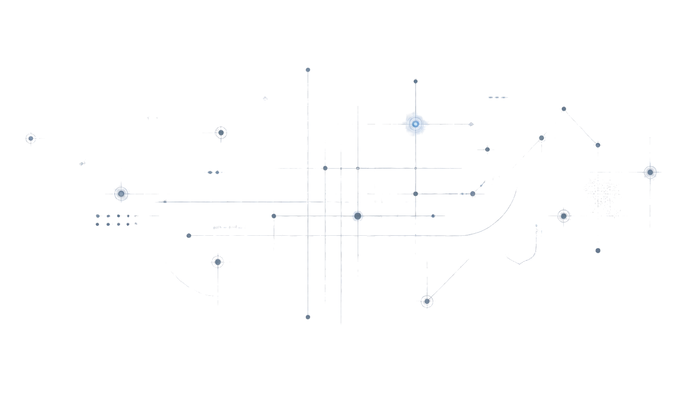

The Operational Entropy Index is a proprietary diagnostic tool and structured intervention process built to identify, measure, and reduce organizational drag as companies scale. Think of it as a map of every place where your company's speed and execution reliability are leaking, plus a surgical path to fixing them.
Built for scaling companies ($10M-$100M+ revenue) hitting execution walls.
Takes 2 minutes. No registration required.

If any of these resonate, organizational entropy is silently eroding your growth.
Is the company operationally hostage to one person's presence? Founders handling a high percentage of critical decisions slows the whole machine.
Processes break down despite strong people. Work stalls between departments or approvals become invisible chokepoints.
Teams operating with incomplete context. Coordination overhead grows with headcount, meetings compensate for unclear systems.
Systems exist but aren't used consistently or fit for purpose. Training is slow and onboarding is difficult every time.
Responsibilities and context don't transfer cleanly between teams. Single points of failure are hiding inside everyday workflows.
Execution reliability declining despite team effort. Work takes longer, decisions get reversed, rework happens constantly.
The OEI measures organizational health across five dimensions. Each one is a common place where execution speed leaks.
Is the company operationally hostage to one person's presence? When the founder has to approve everything, the company can't scale.
Learn more →Does the right information reach the right people reliably? Bad information flow creates duplicate work, wrong decisions, and wasted effort.
Learn more →Where is execution speed being lost in the process chain? Bottlenecks, hand-offs, approvals. Identifying them is half the fix.
Learn more →Are systems used consistently and fit for purpose? Mismatched tools, shadow systems, and chaos create friction at scale.
Learn more →Do responsibilities and context transfer cleanly between teams? Poor hand-offs create rework, confusion, and finger-pointing.
Learn more →Every engagement begins with a no-commitment discovery call. Most work starts with the Initial Diagnosis: it delivers standalone value and is a prerequisite for deeper engagements.
No pressure. Understand if the OEI is a fit for your situation.
4 days. Structured interviews and workflow analysis. Get a baseline OEI score.
Audit, then fix one bottleneck or rebuild the foundation over 90 days.
Real changes to how work moves through your company.
Engagements are scoped to your company. Baseline pricing shown below (under $5M revenue). All pricing scales based on your company's annual revenue.
4 days
Structured interviews and workflow analysis to establish your baseline OEI score.
Get started30 days
Deep dive into your operations. Requires prior diagnosis. Comprehensive mapping and recommendation.
Get started90 days
Fix the top 3 problems. Structural solutions, not patches. For teams ready to rebuild.
Get startedRevenue tiers: $5M-$25M (+25%) • $25M-$50M (+50%) • $50M-$100M (+75%) • $100M+ (custom)
See full pricing breakdownSchedule a no-commitment discovery call to explore whether the OEI is right for your company.
Start your diagnosis